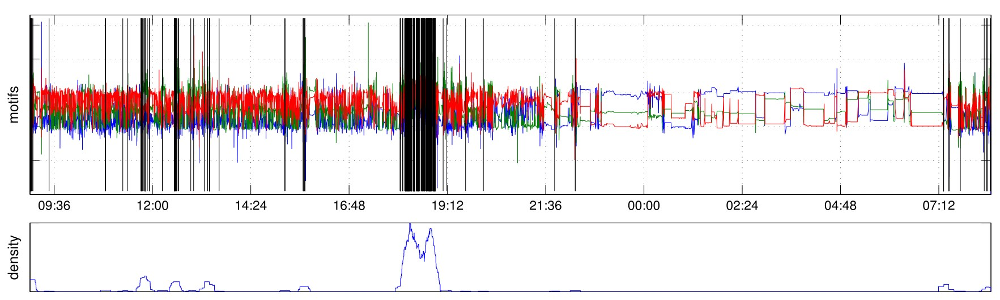

This data set contains a selection of raw acceleration data from a wrist-worn sensor being worn by six participants. The sensor is worn 24/7, thus recording all human motion and activities throughout the day, including a specifically chosen and annotated leisure activity which spans 30-90 minutes per day depending on the participant. Further data set properties: The data is recorded with the HedgeHog sensor, logging acceleration in 3 dimensions, sampled at 100 Hertz. The acceleration samples are time-stamped, and are accompanied with ambient light sensor data. The sensor was worn at the dominant wrist of the test subjects. The activities of interest are the participants' leisure activities: badminton, cycling, flamenco dancing, playing guitar, gym workout, zumba aerobics. The plot below shows the acceleration data (raw per axis of the 3D accelerometer), over one of the days in the dataset. The X axis displays the time during the day (from 9am till 8am) and the Y axis the acceleration values. The black markers in the main plot represent the motif occurrences for the activity "cycling". The density of those occurrences (lower plot) can then be used for classification.
The data set (download archive) contains raw sensor data stored in the Python numerical library data format (numpy), and a single annotations comma separated file. Please make sure to read the README.fst in the archive for details on loading and accessing data.
You may use this data for scientific, non-commercial purposes, provided that you give credit to the owners when publishing any work based on this data. This data set is opened up to anyone interested in activity recognition to encourage reproducible results. Please cite our paper if you publish results on this data set, and consider making your own data sets open for anyone to download in a similar fashion. We would also be very interested to hear back from you if you use our data in any way and are happy to answer any questions or address any remarks related to it.